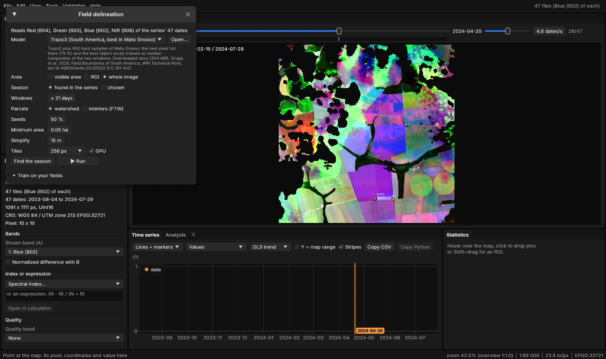
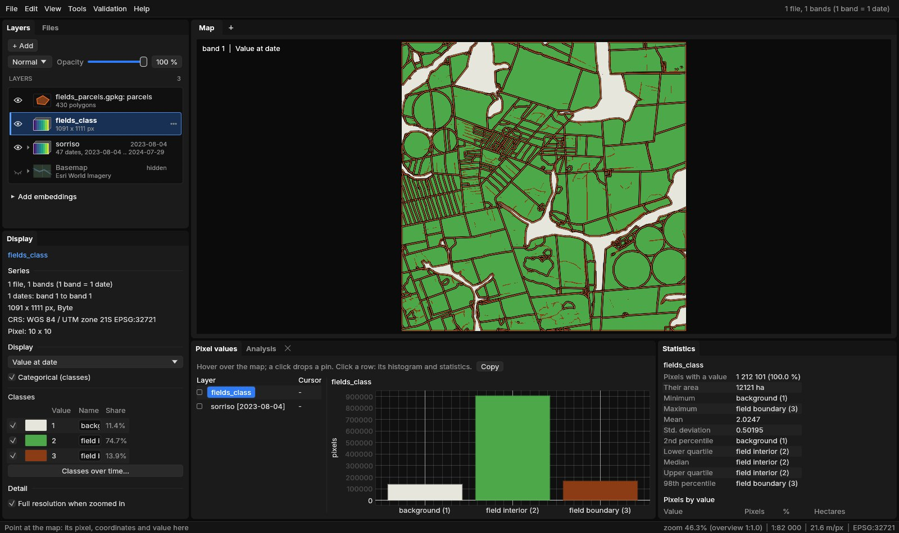
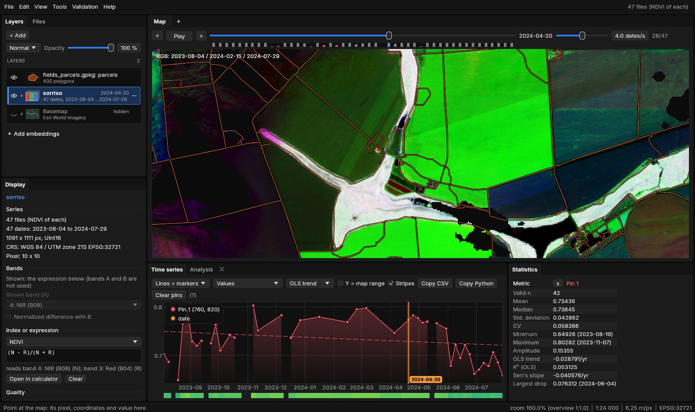
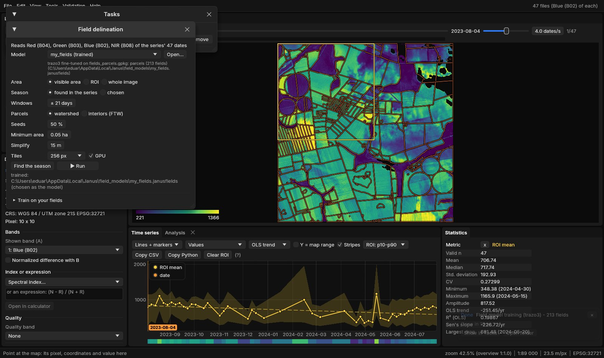

01The idea
A field is easiest to see twice: when it is planted and when it is harvested, its neighbours rarely on the same day. Fields of The World (FTW, Kerner et al. 2025) trained a U-Net to label every pixel of two Sentinel-2 images of a season, window A about the green-up and B about the harvest, as background, field interior or field boundary. WRI's Trazo (Grupp et al. 2026) trained the same network further on South America, Mato Grosso above all.
Janus finds the season in your series, makes a median composite of each window, runs the network in tiles that overlap and are cut back to their middles, and keeps the three probabilities. The parcels come from them: each field's sure interior seeds a parcel that floods outwards over the boundary's probability (a watershed), so neighbouring fields touch along their shared boundary instead of being left apart by it.
02The example
A year of Sentinel-2 over Sorriso, Mato Grosso, the largest soy county of Brazil: 47 dates from August 2023 to July 2024, 10 m, 1091 × 1111 pixels, the four bands the networks read (blue, green, red, NIR) as the L2A digital numbers. The map shows the NDVI of three dates as red, green and blue: August 2023, February 2024 and July 2024, so a field's colour is its season. Fields of soy and second-crop maize, centre pivots and the gallery forests along the streams.
03The parameters
Tools → Classification → Field delineation (parcels)..., with a Sentinel-2 series active.


| Parameter | Default | What it does |
|---|---|---|
| Model | Trazo3 | Trazo3 (South America, best in Mato Grosso), Trazo SA (the soy ecoregions, the most precise), Trazo2, Trazo1, FTW B3 (the world), or a .janusfields file trained in Janus (Open...). Each is downloaded once and kept. |
| Area | visible area | What is on screen, the ROI or the whole image. |
| Season | found | Found in the series: the region's NDVI date by date, window A about its green-up and B about its fall. Or two windows chosen by date. |
| Windows | ± 21 days | A found window's dates: this many days either side of the season's start and end. Find the season shows them over the NDVI before running. |
| Parcels | watershed | Watershed: interiors flooded over the boundary, neighbours touching. Interiors (FTW): each set of connected interior pixels a parcel, as ftw-tools polygonize does. |
| Seeds | 50 % | How sure an interior pixel must be (its four neighbours interior too) to seed a parcel. Higher: fewer seeds, fields less often split. |
| Minimum area | 0.05 ha | Smaller parcels merged into a neighbour, or left out without one (ftw-tools: 500 m²). |
| Simplify | 15 m | The outlines simplified to this tolerance (ftw-tools: 15 m). |
| Tiles | 256 px | The network's tile; the GPU, or the CPU when unticked. |
The networks expect a cropping season: two windows a few months apart with the fields bare in one and green in the other. With a series of another kind (one date, a forest, a year of clouds) choose the windows yourself, or the class map will be poor.
04Running it
Run on the whole image. The first run of a model downloads its weights (Trazo3: 204 MB) and takes about two minutes; after that the 1.2 million pixels take about three seconds on the GPU. A run makes the class map, the interior and boundary probabilities (hidden layers), and the parcels, as a raster of their numbers and as polygons in a GeoPackage, opened as a vector layer.
05The class map


The boundaries are thin and continuous between fields of different crops or dates; between two fields of the same crop sown on the same day they are faint or broken, the network's main source of merged parcels. The boundary's probability (a hidden layer) shows where it hesitated.
06The parcels


430 parcels cover 10 752 ha here: 25 ha on average, the largest 483 ha. Each polygon has its area_ha, perimeter_m, pixels and mean_interior (the network's mean certainty in it), so the GeoPackage opens in QGIS as it is. In Janus, Alt + hover shows a parcel's attributes, Alt + click makes it the ROI, and the chart then gives its mean series.
07How accurate
The networks were ported to Rust (Burn) from their published weights. On the test chips of the Trazo dataset, scored as ftw model test scores them (pixels of the field interior; a field found when it overlaps its true one with an IoU above 0.5), Trazo3 in Janus gives what WRI published:
| Test set | Pixel IoU | Precision | Recall | Object precision | Object recall |
|---|---|---|---|---|---|
| Mato Grosso, Janus | 79.09 | 86.81 | 89.89 | 26.53 | 24.78 |
| Mato Grosso, published | 79.17 | 86.43 | 90.41 | 26.90 | 24.75 |
| Soy, Janus | 75.34 | 88.25 | 83.74 | 30.77 | 34.76 |
| Soy, published | 74.96 | 87.55 | 83.90 | 30.82 | 34.59 |
| Chiquitania, Janus | 68.05 | 80.86 | 81.12 | 28.00 | 35.65 |
| Chiquitania, published | 68.77 | 81.68 | 81.31 | 28.00 | 35.73 |
The pixels are right four times in five; whole fields much less often, because one missing stretch of boundary merges two fields and fails both. The watershed recovers many of them: scored against the true fields, its parcels find 36 % of Mato Grosso's, 49 % of the soy set's and 44 % of Chiquitania's, against 25 %, 35 % and 36 % for the class map's own fields (the table's object recall), at a precision a few points lower (20, 25 and 23 %). These scores ask much (an IoU above 0.5 with each true field); for areas and counts over a region the parcels do far better than for any single field.
08Training on your fields
Where the networks' fields are not yours (pastures, smallholdings, another country's way of farming) teach them. Draw, or open, the fields of a small area as polygons, Shift + drag an ROI around that area, and in Train on your fields choose the vector layer, the epochs and a name.
The ROI says where you know every field: inside it, pixels in no polygon are background and the polygons' edges are boundary; outside it nothing is assumed. Janus cuts the ROI into chips with the series' windows, fine-tunes the chosen model on them (its batch normalisation frozen, so a few chips do not upset it) and saves a .janusfields file in Janus's field_models folder, chosen as the model at once.


Here 213 fields gave 9 chips and two epochs took 19 seconds on the GPU; the model file is 50 MB. Train the more epochs the more fields you have, and check the result on an area you did not train on. On the Trazo dataset, Trazo3 fine-tuned on 250 chips of Mato Grosso lost some of its pixel IoU there (79.1 → 75.8) but found more whole fields (object recall 24.8 → 30.2, watershed 36 → 44 %): it learnt to draw more boundaries. A few dozen fields of your region teach the same.
09What next
- Classify by parcel: the parcels as samples or as objects in Tools → Classification, one class a field instead of a pixel.
- Each field's series: Extract series on the parcels, or zonal statistics of any index through time.
- Objects of any land: where there are no fields, SNIC cuts the image into segments of alike series.
- Score and train in bulk: the
fields_evalandfields_trainexamples ofjanus-mlscore a model on labelled chips and train one on many.
10References
- Kerner, H., et al. (2025). Fields of The World: a machine learning benchmark dataset for global agricultural field boundary segmentation. Proceedings of the AAAI Conference on Artificial Intelligence, 39. (ftw-baselines, CC-BY-4.0 weights)
- Grupp, D., et al. (2026). Field Boundaries of South America. WRI Technical Note. doi:10.46830/writn.25.00033. (CC-BY-4.0 weights)
- Ronneberger, O., Fischer, P., Brox, T. (2015). U-Net: convolutional networks for biomedical image segmentation. MICCAI, 234–241.
- Tan, M., Le, Q. (2019). EfficientNet: rethinking model scaling for convolutional neural networks. ICML, 6105–6114.
- Zeit: the library behind the tools of Janus.